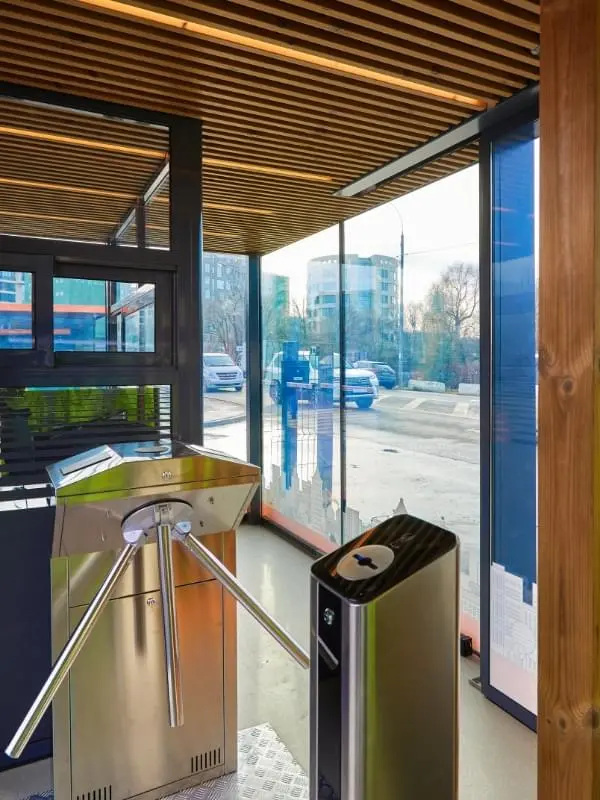
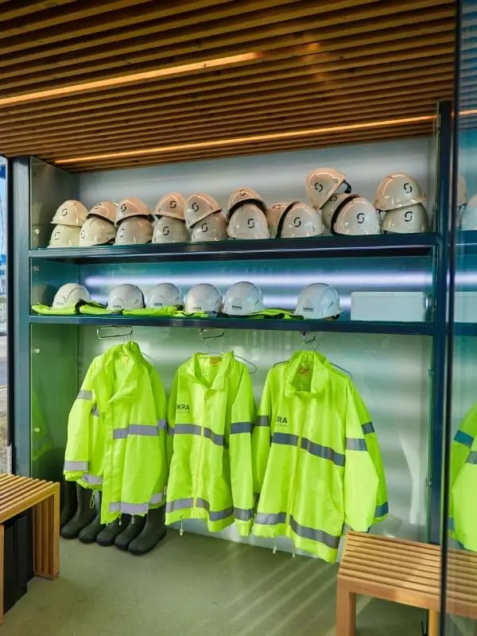

Культура строительства

Подход к работе
Высокий уровень культуры производства работ, а также персональная ответственность на каждом этапе возведения объектов, наличие коммуникационной и информационной культуры, — все это позволяет нам реализовывать самые
амбициозные и беспрецедентные задачи.
Скачать презентацию

